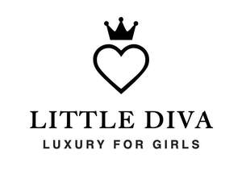
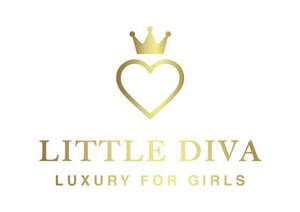

Trade Mark Journal No.2025/030 25 July 2025
UK00004234209 15 July 2025 (18,25)
Mark 1

Mark 2

- Class 18
- Fashion handbags; Bags for sports clothing; Kid; Carry-on bags; Toiletry bags; Cloth bags; Garment bags; Toilet bags; Make-up bags; Makeup bags; Bags for clothes; Gym bags; Wash bags for carrying toiletries; Garment bags for travel; Towelling bags; Casual bags; Make-up bags sold empty; Carrying bags; Textile shopping bags; Hand bags.
- Class 25
- Clothing for children; Fashion hats; Baby doll pyjamas; Ready-to-wear clothing; Dance clothing; Knitwear [clothing]; Clothing; Clothing for gymnastics; Face masks [fashion wear] ; Clothing for sports; Sports clothing; Casual clothing; Athletic clothing; Clothes for sport; Leisure clothing; Girls' clothing; Swim wear for children; Clothing for leisure wear; Clothes for sports; Trousers for children; Headbands [clothing]; Headbands for clothing; Lingerie; Underwear for women; Sportswear; Bathing costumes for women; Beach clothing; Ladies wear; Pinafore dresses; Dresses; Jogging outfits; Jumper dresses; Bandeaux [clothing]; Outerclothing for girls; Underclothing for women; Clothes; Dresses for evening wear; Women's clothing; Coats for women; Woolen clothing; Sleep masks; Masks (Sleep -); Face mask [clothing] ; Sleeping garments; Sleep pants; Eye masks; Sleep shirts; Bed socks; Bed jackets; Night shirts; Night gowns; Pajamas; Pajamas (Am.); Pyjamas; Nightcaps; Underwear; Briefs [underwear]; Sweat-absorbent underclothing [underwear]; Trunks [underwear]; Sweat-absorbent underwear; Underwear (Anti-sweat -); Anti-sweat underwear; Knitted underwear; Undergarments; Underpants; Functional underwear; Underclothes; Long underwear; Women's underwear; Panties; Shorts [clothing]; Ladies' underwear; Slips [undergarments]; Pants; Bottoms [clothing]; Jogging bottoms [clothing]; Underclothing; Dress pants; Leggings [trousers]; Undershirts; Underclothing (Anti-sweat -); Anti-sweat underclothing; Sweat-absorbent underclothing; Socks and stockings; Jogging pants; Bra straps [parts of clothing]; Slips [underclothing]; Swimsuits; Slips [clothing]; Sweat-absorbent socks; Pantyhose; Womens' undergarments; Yoga pants; Warm-up pants; Beach clothes; Ladies' dresses; Ladies' clothing.
Caloia Capital Ltd